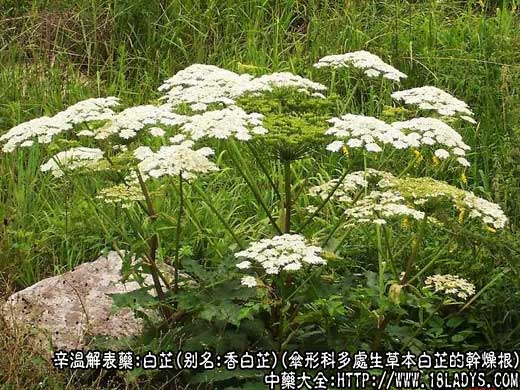
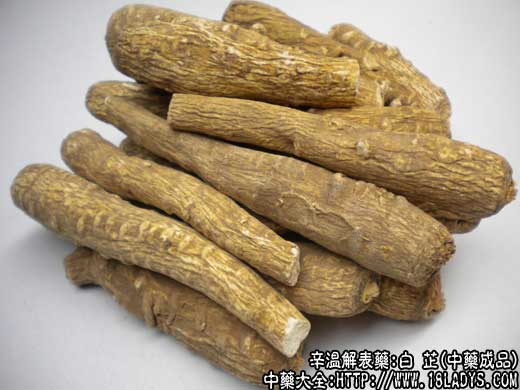

原文连接:https://www.daquan.com/post/2291.html



本品为常用中药。《神农本草经》列为上品。原命白茝(音柴)。
别名：香白芷。
来源：为伞形科多处生草本植物白芷(杭白芷)、川白芷、禹白芷、祁白芷的干燥根。均为栽培。
植物形态：白芷，多年生草本，高2～3米，根少分歧，直立圆形，中空，表面有沟纹，叶互生，茎下部叶为三出状分裂，叶柄全部成鞘状抱茎，叶片边缘有不规则的锯齿，表面绿色，背面灰白色至淡绿色，两面均无毛。仅叶脉上有短刚毛。复伞形花序。顶生，花瓣5片白色，双悬果长椭圆形。
杭白芷和白芷近似，但植枝较矮。茎及叶鞘多万诶黄绿色，根上部近方形，皮孔大而突出。
产地：杭白芷生产于浙江省杭州的笕桥。川白芷，生产于四川省遂宁、温江、崇庆等地。禹白芷生产于河南省禹县，长葛等地。祁白芷生产于河北省安国县（祁州）。
性状鉴别：圆锥形有方楞，头大尾细，长10～15厘米，中部直径2~5厘米，顶端方圆形，有茎痕。皮孔横长多排列成四行（俗称疙瘩丁或瘌蛤蟆皮）。质坚实。断面白色或灰白色。粉性。皮层有棕黄色油点（分泌腔），形成层显棕色环，略方形。气芳香，味微辛苦，质较佳。
以根粗，头部类方形，粉性足，香气浓者为佳。
川白芷：圆锥形，头端略显方楞，体顺长略似胡萝卜，几无分歧，长10～20厘米，直径2～5厘米，茎痕略下凹，外皮灰褐色或棕褐色，有纵向的细皱纹，亦有多数横长皮孔，但较杭白芷少，凸起较小。质坚实，断面白色或微黄色，粉性。皮层有棕色油点。形成层显棕色环，呈不规则的圆方形。气芳香，味微辛苦。
以根肥大均匀，就爱你赢，粉质足，香气弄厚者为佳。
禹白芷、祁白芷，形态基本相同。为圆锥形，似胡萝卜，少数有分歧，长10～20厘米，直径2～4厘米，茎痕圆形略下凹，外皮土黄色。凸起的皮孔甚小，质略轻泡，断面白色粉性。形成层显灰色环呈圆形。气芳香，味微辛苦。
以根调肥壮均匀，皮细，坚硬，光滑，粉质足，香气浓，不抽皱者为佳。
主要成分：含挥发油，又含比克一白芷素、新比克一、白芷醚及白芷毒素等。
药理作用：解表、祛风、止痛。
1、镇痛。
2、兴奋中枢。动物实验证明，少量白芷毒素可兴奋延脑的呼吸中枢，血管舒缩中枢，故可见呼吸增强，血压上升。可作为延脑兴奋药，对毒蛇咬伤后由于蛇毒引起的中枢神经系统抑制有治疗作用。前人对本品兴奋中枢的作用也有一定认识，认为“其气芳香，能通九窍”；
3、抗菌。对痢疾杆菌、伤寒杆菌等有抑制作用。又能抑制革兰氏阳性菌，且对人形结核杆菌有显著的抑制作用。
炮制：切片生用。
性味：辛温。
归经：入肺、胃经。
功能：发表散风。消肿止痛。
主治：感冒头痛、鼻塞，鼻渊疼痛（鼻窦炎），眉棱骨疼，痈肿疮疡。
临床应用：
1、常用于治疗感冒头痛。前额部痛用之尤好，配羌活、防风同用，能加强效果。妇女胎前产后的感冒头痛用之亦佳，可配川芎。
2、用于治疗由风热引起的眉棱骨痛和压痛（即眼角和眼眶上的骨痛，常由感冒、上呼吸道炎引起），配黄芩。
3、用于治疗由鼻渊（鼻窦炎）引起的头胀痛，作为辅助药，配辛夷、苍耳子等同用。
4、用于治疗毒蛇（如金环蛇等含神经毒的毒蛇）咬伤，在中草药蛇药方剂内往往加有白芷，可能是取其兴奋中枢作用。
此外，还用于治疗牙痛（由烽火引起的牙痛，配石膏等清热药）。疖痈的肿痛（配蒲公英、银花等清热解毒药），取其有镇痛作用，抑菌方面可能也其作用。头部挫伤或脑震荡后的跌打肿痛，用白芷缓解症状也有一定效果。
一般认为白芷性燥烈，发散较甚，因此，血虚所致的头痛不宜应用。
用量：3~9g。
处方举例：驱风上清散（《审视瑶函》）：黄芩6g、白芷4.5g、羌活3g、防风3g、柴胡3g、川芎3.6g、荆芥2.4g、甘草1.5g，共研细末，每服12g，水煎，食后服，治风热所致眉棱骨痛。